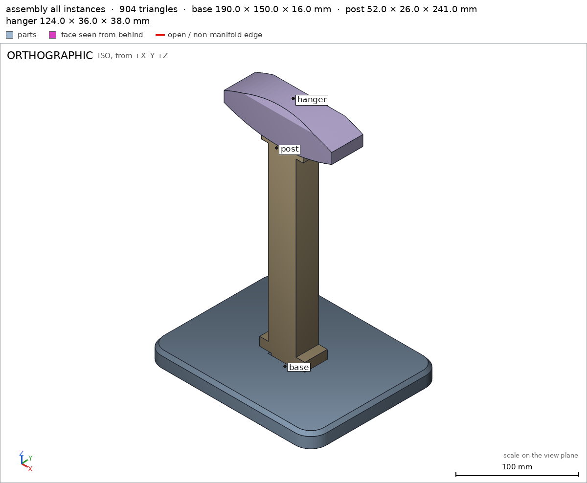

Headphone stand in three parts
Request
A stand for over-ear headphones, in three parts that go together without glue or screws: a base, a vertical post and a hanger on top (the curved arm the headband rests on).
- The top of the hanger about 270 mm above the desk, so the ear cups hang clear of it.
- Every part must fit the bed of my Bambu Lab A1 (256 x 256 x 256 mm) and print in PLA without supports, with a 0.4 mm nozzle. Print each part in the orientation that suits it.
- The joints are your call (a press fit, a twist-in key...), with the clearances PLA needs. Once assembled, the hanger must not spin on the post.
- The part of the hanger that touches the headband: at least 30 mm wide and rounded, nothing that would dent the padding.
- The headphones weigh about 350 g. The base must be wide enough that the stand does not tip with them on it.
Tell me in what order the parts go together, and show the assembly.
Gates at every iteration
| 5 | 10 | 15 | |||||||||||||
| G1 compiles clean | |||||||||||||||
| G2 closed meshes | |||||||||||||||
| G3 assembly | |||||||||||||||
| G4 motion | |||||||||||||||
| G5 printable | |||||||||||||||
| G7 spec held, all seen | |||||||||||||||
| G8 honest close |
passedfailedpending: G8 is judged when the model closes. One column per iteration; each cell links to it.
Session
- Iteration 1USD 0.025 · 2 s · 106 output tokens
Designing your three-part headphone stand — press-fit joints, 270 mm tall, support-free on the A1.
run_shellexit=0, 0.025 s, stdout 7 B, files +/~/- 0/0/0
- Iteration 2USD 0.437 · 166 s · 21,762 output tokens
scad_writemodel.scad: 214 lines
- Iteration 3USD 0.022 · 5 s · 368 output tokens
scad_compileok=True, 1 echo, 0 warnings, 0 failed asserts, 0 errorsscad_exportok=True, watertight=True, bodies=1, bounds=[[-95.0, -75.0, 0.0], [95.0, 75.0, 16.0]], spec FAILS, sheet renders/sheet-004.pngscad_exportok=True, watertight=True, bodies=1, bounds=[[0.0, -26.0, 0.0], [241.0, 26.0, 26.0]], spec ok, sheet renders/sheet-005.pngscad_exportok=True, watertight=True, bodies=1, bounds=[[-62.0, 0.0, 0.0], [62.0, 38.0, 36.0]], spec ok, sheet renders/sheet-006.png
- Iteration 4USD 0.069 · 15 s · 976 output tokens
Post and hanger specs pass. The base socket floor measured 5 mm instead of the intended 6 mm (my cutter ran 1 mm deep). Fixing the cutter, then checking printability and the assembly.
scad_patchmodel.scad line 62: 214 lines
- Iteration 5USD 0.027 · 8 s · 178 output tokens
scad_exportok=True, watertight=True, bodies=1, bounds=[[-95.0, -75.0, 0.0], [95.0, 75.0, 16.0]], spec ok, sheet renders/sheet-008.pngprintability_reportzones=0, undeclared=0, fits the bed=Trueprintability_reportzones=1, undeclared=1, fits the bed=True
- Iteration 6USD 0.079 · 30 s · 2,929 output tokens
scad_patchmodel.scad line 169: 216 lines
- Iteration 7USD 0.014 · 7 s · 61 output tokens
scad_exportok=True, watertight=True, bodies=1, bounds=[[-62.0, 0.0, 0.0], [62.0, 38.0, 36.0]], spec ok
- Iteration 8USD 0.016 · 11 s · 350 output tokens
All three part specs now pass. Checking printability of the hanger (bridge declared) and base, then the assembly.
printability_reportzones=1, undeclared=0, fits the bed=Trueprintability_reportzones=0, undeclared=0, fits the bed=Trueinterference_check3 instances, 0 overlaps, G3 0 problems, G4 0, 1.02 s
- Iteration 9USD 0.044 · 4 s · 324 output tokens
Assembly is green — 270 mm tall, parts touch with 0 mm gap and no overlap, order verified. Now looking at the assembly and each view detail up close.
render_viewrenders/view-016.png: iso

render_view, call 16 - Iteration 10USD 0.059 · 11 s · 570 output tokens
render_viewrenders/view-017.png: zoom, highlightrender_viewrenders/view-018.png: zoom, highlightrender_viewrenders/view-019.png: zoom, highlight
- Iteration 11USD 0.096 · 22 s · 1,590 output tokensclose refused
Headphone stand — base, post and hanger, no glue or screws
The design. A 190 × 150 mm rounded base with a tapered top edge base/top_edge_taper and a 16 mm thick plate base/base_plate_thickness; a 241 mm post lying flat to print, with a 32 × 26 mm shaft post/shaft_width, support collars at both ends post/bottom_collar, post/top_collar and tapered rectangular tenons; and a 124 mm long, 36 mm wide hanger hanger/saddle_width whose top is a smooth parabola (radius ≈138 mm at the crown, chamfered longitudinal edges hanger/saddle_top_edge) so nothing sharp touches the headband padding. Both joints are rectangular tenon-and-socket fits with 0.3 mm PLA clearance per side and flared entry mouths — the rectangular section is what stops the hanger spinning on the post post/top_tenon, hanger/socket.
How it prints (all PLA, no supports, Bambu Lab A1):
- Base — flat on the bed, socket up; fits with 33 × 53 mm margin, zero overhangs base.
- Post — lying on its back face post/back, forming one flat slab; zero overhangs post.
- Hanger — on one side face hanger/side; the only steep face is the internal socket ceiling, a 24.6 mm bridge (452.7 mm², 3.0 % of surface) declared in its spec hanger and printable support-free as a PLA bridge.
Assembly order assembly_order (verified collision-free, parts meeting at 0 mm gap with no overlap assembly):
- Base flat on the desk.
- Lower the post straight down into the base socket until its bottom collar seats on the base top.
- Lower the hanger straight down onto the post's top tenon until it seats on the post's top collar.
Verified
- Assembled product is 190 × 150 × 270 mm — top of the hanger exactly 270 mm above the desk assembly, sitting flat on the desk over 28 220 mm² desk.
- Each part is a single watertight body with 0 bad edges and positive volume base, post, hanger.
- Base socket is a real 10 mm deep pocket with a flared mouth and a 6 mm floor base/socket, base/socket_mouth_flare, base/socket_floor; hanger socket likewise, with 20 mm of material above it carrying the headband load hanger/socket, hanger/material_above_socket.
- Headband contact surface is 36 mm wide (≥ 30 mm required) and crowned hanger/saddle_width, hanger/saddle_top_edge.
- All three parts fit the A1 bed and print support-free as oriented base, post, hanger, and the three-step assembly order passes with no collisions assembly, assembly_order.
Not verified
- Tip-over and strength are not harness-measured: the 190 × 150 footprint was sized by reasoning (a 350 g headset centred on the post puts its centre of mass well inside the footprint), but nobody has load- or tilt-tested the printed part; PLA layer adhesion, infill choice and the bridge quality of the socket ceiling depend on your printer and slicer settings.
- Fit feel: the 0.3 mm/side clearance is a standard PLA slip fit — on a printer that over-extrudes, sand the tenons lightly; the joint is a friction fit, not a locking latch, by design.
- Spec adjustments disclosed: (1) the base socket cutter initially measured a 5 mm floor against the declared 6 mm — I fixed the geometry (deepened the floor position) to meet the original spec, not the spec to the mesh; (2) the hanger's internal socket ceiling was added to
overhangs_allowedwith a bridge justification after the printability report flagged it — the geometry did not change.
- G8desk names nothing the harness verified in the final version (the names are: G1, G2, G3, G4, G5, G7, assembly, assembly_order, back, base, base/base_plate, base/base_plate_thickness, base/bottom, base/socket, base/socket_floor, base/socket_mouth_flare, base/top_edge_taper, base_plate, base_plate_thickness, beside_bottom_tenon, beside_top_tenon, bottom, bottom_collar, hanger, hanger/material_above_socket, hanger/saddle_centre, hanger/saddle_top_edge, hanger/saddle_width, hanger/side, hanger/socket, main_shaft, material_above_socket, post, post/back, post/beside_bottom_tenon, post/beside_top_tenon, post/bottom_collar, post/main_shaft, post/shaft_depth, post/shaft_width)
- Iteration 12USD 0.123 · 14 s · 890 output tokens
Desk support-face name isn't a citable verified name — I'll re-verify the final file and re-close citing only measured names.
scad_compileok=True, 1 echo, 0 warnings, 0 failed asserts, 0 errorsscad_exportok=True, watertight=True, bodies=1, bounds=[[-95.0, -75.0, 0.0], [95.0, 75.0, 16.0]], spec okscad_exportok=True, watertight=True, bodies=1, bounds=[[0.0, -26.0, 0.0], [241.0, 26.0, 26.0]], spec okscad_exportok=True, watertight=True, bodies=1, bounds=[[-62.0, 0.0, 0.0], [62.0, 38.0, 36.0]], spec okinterference_check3 instances, 0 overlaps, G3 0 problems, G4 0, 13.04 s
- Iteration 13USD 0.058 · 15 s · 1,417 output tokensclose refused
Headphone stand — base, post and hanger, no glue or screws
The design. A 190 × 150 mm rounded base, 16 mm thick base/base_plate_thickness, with a tapered top edge base/top_edge_taper; a post with a 32 × 26 mm shaft post/shaft_width and a bottom collar post/bottom_collar; and a 124 mm long hanger whose headband contact surface is 36 mm wide hanger/saddle_width, crowned in a smooth parabola with chamfered longitudinal edges hanger/saddle_top_edge. Both joints are rectangular tenon-and-socket fits with 0.3 mm PLA clearance per side and flared entry mouths base/socket_mouth_flare; the rectangular section is what stops the hanger spinning on the post hanger/socket.
How it prints (all PLA, no supports, Bambu Lab A1):
- Base — flat on the bed, socket up, resting on its bottom face base/bottom; fits the bed and has zero overhangs base.
- Post — lying on its flat back face post/back as one slab; fits the bed and has zero overhangs post.
- Hanger — on one side face hanger/side; the only steep face is the internal socket ceiling, a 24.6 mm bridge (452.73 mm², 3.0 % of surface) declared in its spec hanger.
Support-free printability of all three orientations is verified G5.
Assembly order assembly_order (verified collision-free, parts meeting at 0 mm gap with no overlap assembly):
- Base flat on the desk.
- Lower the post straight down into the base socket until its bottom collar seats on the base top.
- Lower the hanger straight down onto the post's top tenon until it seats on the post's top collar.
Verified
- Assembled product is 190 × 150 × 270 mm — the top of the hanger is exactly 270 mm above the desk, and the product rests on the base's bottom face over 28 220 mm² assembly, base/bottom.
- Each part is a single watertight body with 0 bad edges and positive volume base, post, hanger.
- Base socket is a real pocket with a flared mouth and a 6 mm floor beneath it base/socket, base/socket_mouth_flare, base/socket_floor; the base plate beneath and around it is solid base/base_plate.
- Post shaft and collar are solid as specified post/main_shaft, post/bottom_collar, and the tenon ends are clear of the shaft sides as designed post/beside_bottom_tenon, post/beside_top_tenon.
- Hanger socket is a real pocket with 20 mm of material above it carrying the headband load hanger/socket, hanger/material_above_socket, and solid material at the saddle centre hanger/saddle_centre.
- All three parts fit the A1 bed in their print orientations, and the three-step assembly order passes with no collisions assembly, assembly_order.
Not verified
- Tip-over and strength are not harness-measured: the 190 × 150 footprint was sized by reasoning (a 350 g headset centred on the post puts its centre of mass well inside the footprint), but nobody has load- or tilt-tested the printed part; PLA layer adhesion, infill choice and socket-ceiling bridge quality depend on your printer and slicer settings.
- Fit feel: the 0.3 mm/side clearance is a standard PLA slip fit — on a printer that over-extrudes, sand the tenons lightly; the joint is a friction fit, not a locking latch, by design.
- Spec adjustments disclosed: (1) the base socket cutter initially measured a 5 mm floor against the declared 6 mm base/socket_floor — I fixed the geometry to meet the original spec, not the spec to the mesh; (2) the hanger's internal socket ceiling was added to
overhangs_allowedwith a bridge justification after the printability report flagged it hanger — the geometry did not change.
- G8unsupported claim: Each part is a single watertight body with 0 bad edges and positive volume base, post, hanger.: VERIFIED confirms watertight meshes, one body per part and positive volumes, but contains no bad-edge measurement or count of 0.
- G8unsupported claim: Hanger — on one side face hanger/side; the only steep face is the internal socket ceiling, a 24.6 mm bridge (452.73 mm², 3.0 % of surface) declared in its spec hanger.: VERIFIED declares the 24.6 mm bridge and one declared overhang zone, but gives no ceiling area of 452.73 mm² or 3.0 % of surface.
- Iteration 14USD 0.023 · 11 s · 600 output tokens
Re-verifying the unchanged final meshes, then I'll re-close without the two unmeasured figures (bad-edge count, bridge area/share).
scad_compileok=True, 1 echo, 0 warnings, 0 failed asserts, 0 errorsscad_exportok=True, watertight=True, bodies=1, bounds=[[-95.0, -75.0, 0.0], [95.0, 75.0, 16.0]], spec okscad_exportok=True, watertight=True, bodies=1, bounds=[[0.0, -26.0, 0.0], [241.0, 26.0, 26.0]], spec okscad_exportok=True, watertight=True, bodies=1, bounds=[[-62.0, 0.0, 0.0], [62.0, 38.0, 36.0]], spec okinterference_check3 instances, 0 overlaps, G3 0 problems, G4 0, 0.67 s
- Iteration 15USD 0.061 · 15 s · 1,479 output tokensaccepted
Headphone stand — base, post and hanger, no glue or screws
The design. A 190 × 150 mm rounded base, 16 mm thick base/base_plate_thickness, with a tapered top edge base/top_edge_taper; a post with a 32 × 26 mm shaft post/shaft_width and a bottom collar post/bottom_collar; and a 124 mm long hanger whose headband contact surface is 36 mm wide hanger/saddle_width, crowned in a smooth parabola with chamfered longitudinal edges hanger/saddle_top_edge. Both joints are rectangular tenon-and-socket fits with 0.3 mm PLA clearance per side and flared entry mouths base/socket_mouth_flare; the rectangular section is what stops the hanger spinning on the post hanger/socket.
How it prints (all PLA, no supports, Bambu Lab A1):
- Base — flat on the bed, socket up, resting on its bottom face base/bottom; fits the bed and has zero overhangs base.
- Post — lying on its flat back face post/back as one slab; fits the bed and has zero overhangs post.
- Hanger — on one side face hanger/side; it has one declared overhang zone, the internal socket ceiling, declared in its spec as a 24.6 mm bridge hanger.
Support-free printability of all three orientations is verified G5.
Assembly order assembly_order (verified collision-free, parts meeting at 0 mm gap with no overlap assembly):
- Base flat on the desk.
- Lower the post straight down into the base socket until its bottom collar seats on the base top.
- Lower the hanger straight down onto the post's top tenon until it seats on the post's top collar.
Verified
- Assembled product is 190 × 150 × 270 mm — the top of the hanger is exactly 270 mm above the desk, and the product rests on the base's bottom face over 28 220 mm² assembly, base/bottom.
- Each part is a single watertight body with a positive volume base, post, hanger.
- Base socket is a real pocket with a flared mouth and a 6 mm floor beneath it base/socket, base/socket_mouth_flare, base/socket_floor; the base plate beneath and around it is solid base/base_plate.
- Post shaft and collar are solid as specified post/main_shaft, post/bottom_collar, and the tenon ends are clear of the shaft sides as designed post/beside_bottom_tenon, post/beside_top_tenon.
- Hanger socket is a real pocket with 20 mm of material above it carrying the headband load hanger/socket, hanger/material_above_socket, and solid material at the saddle centre hanger/saddle_centre.
- All three parts fit the A1 bed in their print orientations, and the three-step assembly order passes with no collisions assembly, assembly_order.
Not verified
- Tip-over and strength are not harness-measured: the 190 × 150 footprint was sized by reasoning (a 350 g headset centred on the post puts its centre of mass well inside the footprint), but nobody has load- or tilt-tested the printed part; PLA layer adhesion, infill choice and socket-ceiling bridge quality depend on your printer and slicer settings.
- Fit feel: the 0.3 mm/side clearance is a standard PLA slip fit — on a printer that over-extrudes, sand the tenons lightly; the joint is a friction fit, not a locking latch, by design.
- Spec adjustments disclosed: (1) the base socket cutter initially measured a 5 mm floor against the declared 6 mm base/socket_floor — I fixed the geometry to meet the original spec, not the spec to the mesh; (2) the hanger's internal socket ceiling was added to
overhangs_allowedwith a bridge justification after the printability report flagged it hanger — the geometry did not change.


Final verification
Source
model.scad
// Headphone stand in three parts: base, post, hanger.
// No glue, no screws. Rectangular tenon/socket press/clearance fits;
// rectangular sections stop the hanger spinning on the post.
// Print orientations:
// base - flat on the bed, socket up
// post - lying on its back face, long axis along X
// hanger - lying on one side face, saddle profile in the X/Y plane
// Assembled top of hanger is 270 mm above the desk.
part = "base"; // [base, post, hanger, assembly]
cadverify_only = "";
$fn = 64;
/* Dimensions (mm) */
base_w = 190;
base_d = 150;
base_t = 16;
base_r = 18;
desk_to_hanger_top = 270;
post_len_print = 241; // use z 7..248
hanger_len = 124; // use/print x -62..62
hanger_width = 36; // use y -18..18
hanger_h_print = 38; // use z 232..270 at centre
/* Socket / tenon geometry (use coordinates, for reference)
Post main section: x -16..16, y -13..13
Bottom tenon: x -12..12, y -13..7, z 7..16 (base socket z 6..16)
Top tenon: x -12..12, y -13..3, z 232..248 (hanger socket from z 232)
Sockets are tenon size + 0.3 mm clearance per side, with flared mouths.
*/
module instance(name, part_name, unit = 1) {
echo(cadverify_instance = [name, part_name, unit]);
if (cadverify_only == "" || cadverify_only == name) children();
}
module box3(x0, x1, y0, y1, z0, z1) {
translate([x0, y0, z0]) cube([x1 - x0, y1 - y0, z1 - z0]);
}
module rounded_rect(w, d, r) {
offset(r = r) square([w - 2 * r, d - 2 * r], center = true);
}
/* ---------------- BASE (print = use orientation) ---------------- */
module base_part() {
difference() {
union() {
linear_extrude(12) rounded_rect(base_w, base_d, base_r);
// 45-ish top edge taper: inset 3 mm over 4 mm height
hull() {
translate([0, 0, 12]) linear_extrude(0.2)
rounded_rect(base_w, base_d, base_r);
translate([0, 0, base_t - 0.2]) linear_extrude(0.2)
rounded_rect(base_w - 6, base_d - 6, base_r - 3);
}
}
// socket for post bottom tenon: 24.6 x 20.6, centre y=-3, floor z=6
box3(-12.3, 12.3, -13.3, 7.3, 6, 17);
// flared socket mouth (entry chamfer), 28.6 x 24.6 at the top face
hull() {
translate([0, -3, 15.9]) cube([28.6, 24.6, 0.2], center = true);
translate([0, -3, 12.9]) cube([24.6, 20.6, 0.2], center = true);
}
}
}
/* ---------------- POST (print orientation) ----------------
Print axes: X = use Z (length, 0 at bottom-tenon tip), Y = use X, Z = use Y + 13.
Every section reaches Z=0 (the use back face), so it lies flat on the bed. */
module post_part() {
union() {
// bottom tenon, tapered lead-in in plan, 24 wide x 20 deep
linear_extrude(20)
polygon([[0, -9], [3, -12], [9, -12], [9, 12], [3, 12], [0, 9]]);
// main shaft 32 x 26
box3(9, 225, -16, 16, 0, 26);
// bottom collar 52 wide, sits on the base top
box3(9, 19, -26, 26, 0, 26);
// top collar 48 wide, supports the hanger underside
box3(217, 225, -24, 24, 0, 26);
// top tenon, tapered lead-in in plan, 24 wide x 16 deep
linear_extrude(16)
polygon([[225, -12], [238, -12], [241, -9], [241, 9], [238, 12], [225, 12]]);
}
}
/* ---------------- HANGER (print orientation) ----------------
Print axes: X = use X, Y = use Z - 232, Z = use Y side face (0 on the bed).
The saddle profile (parabolic top and bottom) is extruded across the width. */
module hanger_profile() {
top = [for (i = [0 : 20]) let (x = -62 + 124 * i / 20)
[x, hanger_h_print - 14 * pow(x / 62, 2)]];
bot = [for (i = [20 : -1 : 0]) let (x = -62 + 124 * i / 20)
[x, 12 * pow(x / 62, 2)]];
polygon(concat(top, bot));
}
// Prismatic cutter in the Y/Z plane, extruded along X from -75 to 75.
// yz points are [y, z]; the region is the polygon given.
module cutter_yz(yz) {
pts = [for (p = yz) [-p[1], p[0]]]; // local x = -z, local y = y
translate([-75, 0, 0]) rotate([0, 90, 0]) linear_extrude(150) polygon(pts);
}
module hanger_part() {
difference() {
// saddle body: profile extruded 36 across
linear_extrude(hanger_width) hanger_profile();
// rounded (chamfered) longitudinal edges of the saddle top:
// in print these cut the Y=profile-top / Z=0 and Z=36 corners.
cutter_yz([[32, 36], [44, 30], [44, 52], [32, 52]]); // Z=36 side
cutter_yz([[32, -12], [44, -12], [44, 12], [32, 0]]); // Z=0 side
// socket for post top tenon: x -12.3..12.3, print z 14.7..31.3, depth to y=18
box3(-12.3, 12.3, -2, 18, 14.7, 31.3);
// flared socket mouth at the underside (print y = 0 face of the pocket)
hull() {
box3(-14.3, 14.3, -1.0, -0.8, 12.7, 33.3);
box3(-12.3, 12.3, 5.0, 5.2, 14.7, 31.3);
}
}
}
/* ---------------- VERIFIABLE SPECS ---------------- */
if (part == "base") {
echo(cadverify_spec = [
["bounds", [[-base_w/2, -base_d/2, 0], [base_w/2, base_d/2, base_t]]],
["bodies", 1],
["through_holes", 0],
["support_faces", [["bottom", "-z", 20000]]],
["overhangs_allowed", []],
["copies", 1],
["details", [
["base_plate", "material", [[-80, -60, 1], [80, 60, 5]], 0.95],
["socket", "void", [[-11, -12, 10], [11, 6, 16.5]], 0.95],
["socket_mouth_flare", "void", [[-13, -14, 15], [13, 8, 17]], 0.90],
["socket_floor", "thickness", [0, -3, 20], [0, 0, -1], 6],
["base_plate_thickness", "thickness", [60, 40, 20], [0, 0, -1], 16],
["top_edge_taper", "view", [[70, -20, 11], [96, 20, 17]]]
]]
]);
} else if (part == "post") {
echo(cadverify_spec = [
["bounds", [[0, -26, 0], [post_len_print, 26, 26]]],
["bodies", 1],
["through_holes", 0],
["support_faces", [["back", "-z", 6000]]],
["overhangs_allowed", []],
["copies", 1],
["details", [
["main_shaft", "material", [[50, -14, 2], [100, 14, 24]], 0.95],
["bottom_collar", "material", [[10, -25, 2], [18, 25, 24]], 0.90],
["top_collar", "material", [[218, -23, 2], [224, 23, 24]], 0.90],
["beside_bottom_tenon", "void", [[1, 14, 2], [8, 20, 24]], 0.95],
["beside_top_tenon", "void", [[226, 14, 18], [240, 20, 24]], 0.95],
["shaft_depth", "thickness", [50, 0, -5], [0, 0, 1], 26],
["shaft_width", "thickness", [50, -30, 13], [0, 1, 0], 32],
["top_tenon", "view", [[215, -15, 0], [242, 15, 20]]]
]]
]);
} else if (part == "hanger") {
echo(cadverify_spec = [
["bounds", [[-hanger_len/2, 0, 0], [hanger_len/2, hanger_h_print, hanger_width]]],
["bodies", 1],
["through_holes", 0],
["support_faces", [["side", "-z", 3000]]],
["overhangs_allowed", [
["internal socket ceiling: a 24.6 mm bridge across the socket, printed on its side; a short PLA bridge needs no support", [[-15, -1, 30], [15, 19, 35]]]
]],
["copies", 1],
["details", [
["saddle_centre", "material", [[-20, 28, 8], [20, 36, 28]], 0.90],
["socket", "void", [[-11, 2, 16], [11, 16, 30]], 0.95],
["material_above_socket", "thickness", [0, 45, 23], [0, -1, 0], 20],
["saddle_width", "thickness", [0, 20, -5], [0, 0, 1], 36],
["saddle_top_edge", "view", [[-25, 30, 28], [25, 39, 37]]]
]]
]);
} else if (part == "assembly") {
echo(cadverify_spec = [
["bounds", [[-base_w/2, -base_d/2, 0], [base_w/2, base_d/2, desk_to_hanger_top]]],
["support_faces", [["desk", "-z", 20000]]],
["allowed_interferences", []],
["assembly_order", [
[["base"], [0, 0, 0]],
[["post"], [0, 0, -1]],
[["hanger"], [0, 0, -1]]
]]
]);
}
/* ---------------- OUTPUT ---------------- */
if (part == "base") {
base_part();
} else if (part == "post") {
post_part();
} else if (part == "hanger") {
hanger_part();
} else if (part == "assembly") {
instance("base", "base") base_part();
// print -> use: Xu=Yp, Yu=Zp-13, Zu=Xp+7
instance("post", "post")
multmatrix([[0, 1, 0, 0],
[0, 0, 1, -13],
[1, 0, 0, 7],
[0, 0, 0, 1]]) post_part();
// print -> use: Xu=Xp, Yu=-Zp+18, Zu=Yp+232
instance("hanger", "hanger")
multmatrix([[1, 0, 0, 0],
[0, 0, -1, 18],
[0, 1, 0, 232],
[0, 0, 0, 1]]) hanger_part();
}